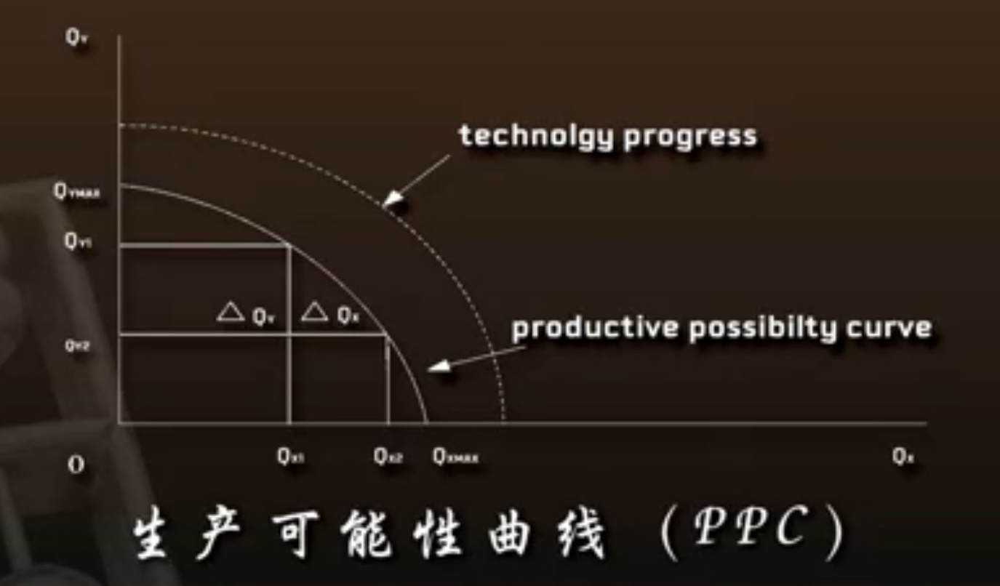
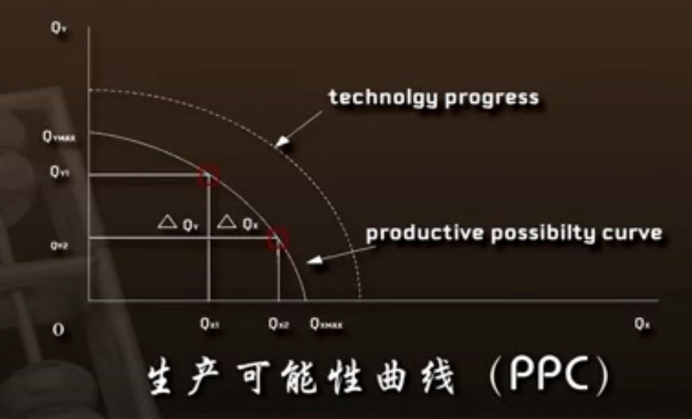
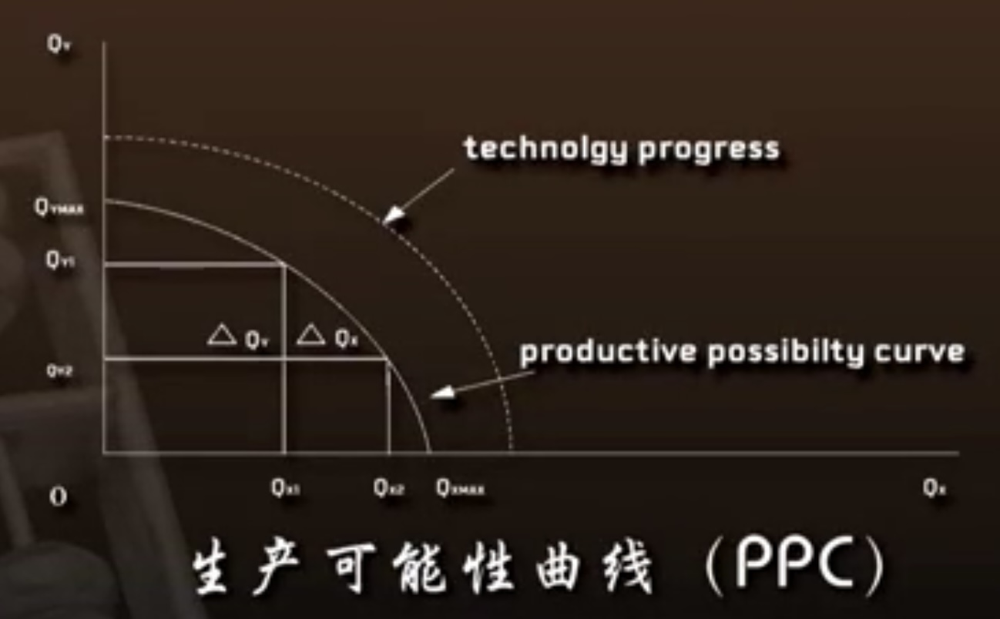
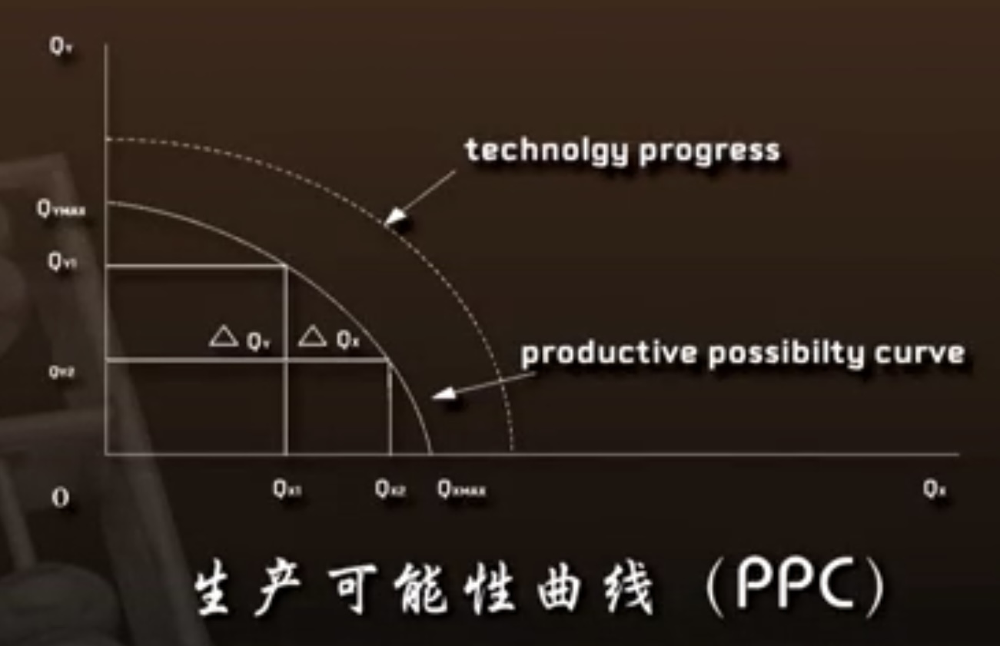
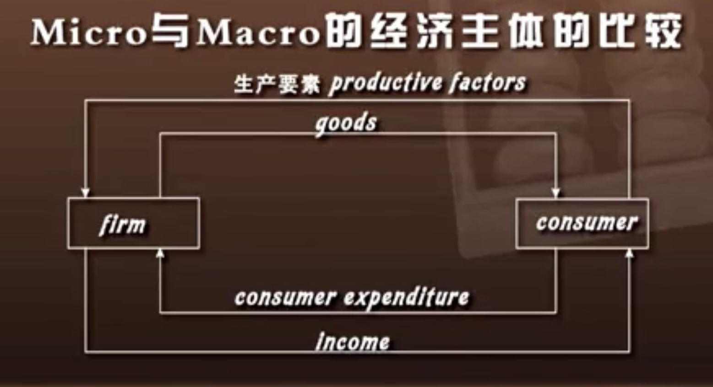
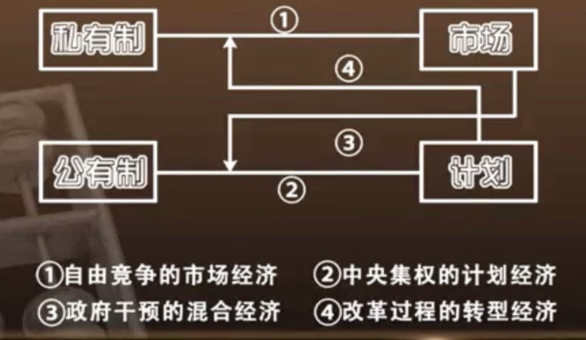
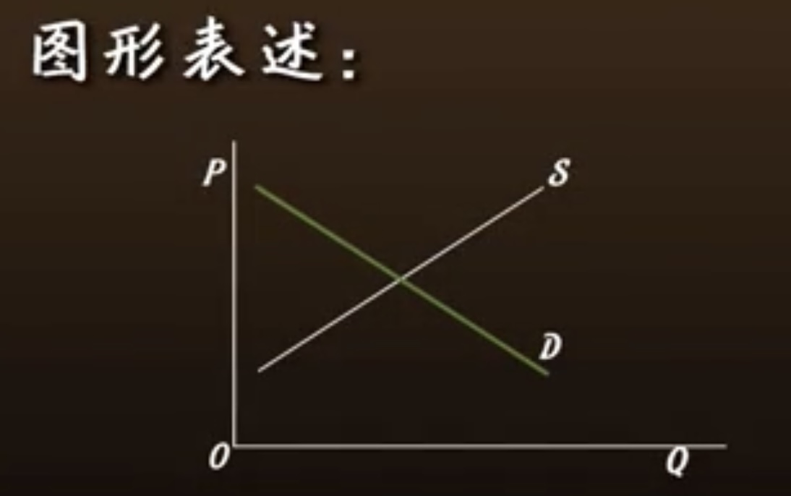

微观经济学学习笔记
微观经济学绪论
学习目标
通过本章学习，你需要掌握和了解以下问题：
1、稀缺性的含义是什么。
2、简要说明微观经济学的理论体系的框架及核心思想。
3、经济学的基本方法中，均衡分析与非均衡分析、静态分析与动态分析的含义是什么。
当代的显学：经济学起源的探秘
笔记
经济学作为社会科学的一门学科分类广泛，在众多经济学理论的分支中最重要的三种：
- 微观经济学
- 宏观经济学
- 计量经济学
宏观经济学的微观基础
罗伯特·卢卡斯
1995年诺贝尔经济学奖得主，对经济周期理论提出了独到的见解。
绪论主要内容：经济学与资源配置
《经济科学的性质和意义》（英）罗宾斯 著
经济学是研究关于目的与可供选择用途的手段之间相互关系的人类行为科学。——罗宾斯
保罗·萨缪尔森（1915-2009）：美国第一位诺贝尔经济学奖得主，他所研究的内容涉及经济学的各个领域，是世界上罕见的多能学者。
经济学是研究人和社会如何进行选择，来使用可以有不同用途的稀缺资源以便生产各种商品，并在现在或者将来把商品分配给社会各个成员或集团以供消费之用。——萨缪尔森
人的欲望的特点：
- 无限性
- 多样性
测验
- 从思想渊源的角度来看，属于经济学的起源的是：古希腊家政学
- 现代经济学的基础包括：
- 计量经济学
- 宏观经济学
- 微观经济学
- （不包括原始经济学）
- 经济学家亚当·斯密认为政治经济学研究的重点是：社会经济活动中生产关系的变化
- 政治经济学转向现代经济学的标志是马歇尔的《经济学原理》
欲望与资源：经济学的核心概念
笔记
人的欲望的特点
- 无限性
- 多样性
住、行、吃、穿、用
资源的特点
- 稀缺性
与人的欲望或需要相比较，资源的数量相对不足。资源稀缺性的程度与资源本身绝对数量的多少并无必然关系。
- 用途的可选择性
需要与需求的分别
需求是受货币预算约束的需要
如何配置资源？
微观经济学讲的就是用市场的方法，怎么来配置资源。
资源的种类包括：
- 自然资源
土地、矿山、河流、大气等
- 人力资源
劳动力
- 资本品
人们劳动和自然资源相结合生产出来的产品，而这些产品不是直接供人们消费的，而是用于再生产。
- 技术
生产可能性曲线/生产可能性边界（在萨缪尔森经济学教科书中出现过）。
生产可能性曲线（PPC）

在这个图形中，纵轴是Y产品，横轴是X产品，称曲线为生产可能性曲线。这条曲线在Y轴上的这一点代表的是在资源配置过程当中，所有的资源都被用来生产Y，而X的产量为0的时候的Y的最大产出量。
生产可能性曲线边界不断向外移动的原因：
- 资源数量增加
资源数量的增加指自然资源、人力资源、资本品的增加
- 技术水平提高
资源数量的增加可以使得一国的生产可能性边界不断地向外移动。而生产技术水平的进步可以使得人们在资源配置活动当中，单位资源的产出数量不断地增加，或者说单位产品耗费的资源数量不断地下降。所以从技术进步的角度来看，如果我们的生产可能性边界不断地往外移，它不一定是平行移动。如果说技术进步导致了生产可能性边界的不断地向外移动，如果这种移动是平行的，那么我们马上就可以得出结论，这个社会当中，技术进步过程当中，生产X产品的技术和生产Y产品的技术是以同样的速度在进步。
机会成本

在生产可能性曲线中可以看到，如果在生产可能性边界上，从一点向另一点移动，这就意味着在增加某种产品产量的同时，一定要减少另一种产品的生产，我们从一点移到另一点，我们增加了X产品的产量，但是同时减少了Y产品的产量。所减少的Y产品的产量就构成增加的X产品产量的机会成本。
测验
- 直接消费的产品不属于资源的种类
- 从经济学的角度来看，满足人类欲望的资源的特点是：稀缺性和用途可选择性
- 在既定的资源条件下，人类生产的产品产量是有限的。
- 从经济学的角度来看，需要不受货币预算约束的需求。
微观与宏观：经济学的分类（上）
笔记
机会成本（续）

$\Delta Q_x$是我们的收益，$\Delta Q_y$是我们的损失。我们要得到更多的X，就必须放弃一定的Y，这就是机会成本。这在经济学里面是一个非常重要和核心的概念。所以要做一个成本和收益的比较，放弃的收入就是机会成本。
边际转换率 MRT

边际转换率(Marginal Rate of Transformation, MRT)，实际上跟机会成本的内涵是一致的。但是MRT有一个数量的定位，我们从曲线上的某一点不断地往下移，意味着我们不断地放弃了一定数量的Y的数量，而增加了X的数量，然后可以看到，这个边际转换率是递减的，意味着你不断地放弃一定单位的Y的数量所能够换来的X数量的增加是不断的减少。实际上这种递减在经济学里面，从最优理论的角度来说，从资源配置的最优化的角度来说，它是保证均衡、保证社会经济活动、生产交换活动为收敛到某一个均衡点的非常重要的一个条件。凡是不递减的东西都是比较危险的东西，比方说毒品，它的效用是不递减的。
生产可能性曲线可以读出资源配置、充分就业、社会的技术进步、社会的资源配置的效率的提升、机会成本、边际转换率。生产可能性曲线是经济学家用来反映资源配置问题的一个最简单的方式，也是非常有用的一个工具。
第一节总结
- 经济学的概念
- 经济学研究的核心是资源配置问题
- 通过分析生产可能性曲线阐述资源配置问题
经济学原理
经济学有1000多个分支，最基本的是微观、宏观和计量。而微观经济学在其中又处在一个非常重要的非常基础的地位。
经济学按原理分类：
- 微观经济学
- 宏观经济学
- （如果考虑到研究方法还有计量经济学）
微观经济学
研究市场经济中单个经济主体的行为及相应的经济变量。
微观经济学研究的基本问题
- 生产什么产品/应该生产什么样的产品以及各种产品应该生产什么样的数量？
- 怎么生产/用什么样的方式来生产/用什么样的要素组合来生产？
大量的农业机械+少量的劳动力：资本密集型
大量的劳动力+少量的机械设备：劳动密集型
可以使用不同的方法，不同的技术来生产同样的产品 - 为谁生产？
这是一个收入分配问题（11章）
宏观经济学
研究国民经济总体运行及相应的经济变量。
宏观经济学研究的基本问题
- 充分就业
- 经济增长
- 经济稳定
经济的大起大落、物价水平的稳定
- 政府的宏观调控
Micro与Macro的经济主体的比较

Micro：个体（Individual）
厂商（Firm） 消费者（Consumer）
Macro：国别（National）
国民经济（National Economy）
测验
- 按照经济学原理的观点，属于经济学的正确分类的是：
- 微观经济学和宏观经济学
- 与微观经济学相比，属于宏观经济学研究的基本问题有：
- 宏观调控
- 经济增长
- 充分就业
- 从经济学原理的观点来看，货币资本的所有者不一定不是消费者
- 宏观经济学主要研究市场经济中多个经济主体的行为及相应的经济变量
微观与宏观：经济学的分类（下）
笔记
微观经济学——个体 个量
宏观经济学——总体 总量
《社会主义经济通货膨胀导论》（1989）
独立的宏观经济体的标准
- 是否拥有独立的设置关税的权利
- 是否拥有独立的发行货币的权利
私有制/公有制与市场/计划

“经济人”的特性
- 自立
- 理性
《国富论》我们每天所需要的食物和饮料，不是出自屠夫、酿酒商和面包师的仁慈，而是出自他们利己心的打算。——亚当•斯密
经济人：处于自利的动机从事经济活动的人。
测验
- 根据微观经济学的观点，微观经济学所研究的经济的性质是：市场经济
- 根据经济学原理的观点，经济人的特征是：自立和理性
- 从变量的角度来看，微观经济学所研究的市场是：单个市场
- 在21世纪，纯粹的自由竞争的市场经济已不存在
自利与理性：现代经济人的本质
笔记
市场
“看不见的手”（市场）——亚当·斯密
信息公开
信息公开是使个人的经济活动符合社会整体利益的条件之一。
如果信息不公开、信息不对称，每个人出于自己的利益来做出选择，最后的结果可能是对大家都不利的，这种情况也可能出现。在信息不对称的情况下，比方说博弈论里面的纳什均衡、囚徒困境。
纳什均衡 Nash equilibrium
约翰·纳什：普林斯顿大学数学系博士，1994年诺贝尔经济学奖得主。
博弈论的两个分支：
- 合作博弈 Cooperative Game
- 非合作博弈 Non-cooperative Game
非合作博弈的解，最典型的最基础的最重要的解就是纳什均衡解答。
在信息不对称的情况下，单个经济主体出于自利的理性选择，最后达成的结果对双方都不利。
见010501.png-010580.png
有限理性
赫伯特·西蒙：第十届诺贝尔经济学奖获奖者，他最重要的研究成果就是有限理性（Bounded Rational）的概念。
史晋川教授：绝大部分对理性假设的批评，深究下去，实际上都不能够成立，这一点是非常重要的。比如说人有时候失去理性，在发火、骂人，但是大多数的统计，统计的大多数的情况表明，发火最少的是面对他的上司，发火比较多的是朋友、家人，或者是陌生人等等之类的。也就是说他即使在发火的时候，在激情上来的时候，还是受到理性的框架的约束的。这个是关于经济学的理性的经济人的假定。当然对于自利，利己和利他也是有很多讨论。但是我们坦率讲，如果把大公无私，就是毫不利己专门利人，这时候你如果从理论上去，作为这样的一种极端的人去考虑，那是不需要市场经济的。不仅不需要市场经济，而且那个社会，在我看来，可能比市场经济还要糟糕。每个人都是毫不利己专门利人，这个社会蛮麻烦的。也就是说每个人为了自身的需求，他的自身需求是什么？是专门利人。你注意啊，讲一个很简单的故事，如果每个人都是这样，我请你们到我家里来吃饭，我那个饭菜，实在是烧的不怎么样，但是你们是专门利人的，懂这个意思吧，你们会怕影响到我的情绪，或者我的好客等等之类。你们就不会把你们的真实需求表现出来。所以每个人都是毫不利己专门利人的话，最大的问题从逻辑上来说就是我们怎么知道别人的真实需求。因为一个人反映他自身的真实需求的时候，他实际上是想，让别人为他能够什么，满足他的这种真实需求。在市场经济当中我吃包子，你一块五一个的庆丰包子，我吃的时候我觉得馅不好，我要退货或者我跟你吵一架等等之类。你看起来他是利己，是不是？但是它最后是有助于改善它的什么，包子的质量。如果每个人都是毫不利己专门利人的话，最大的问题，这个社会你怎么知道人家真正的需求的信息，你很难知道。如果一个人，如果说这个社会当中，大家都不知道对方真实的信息，这个社会的分工、协作等等，都无从谈起，这是个蛮麻烦的事情。当然社会当中少数人，比方说共产党员来说，他应该往这个方向发展，本人也当过党委书记，我在经济学院当过六年党委书记，但是对大多数老百姓，最好还是把你们的诉求合理合法地方式表述出来，实际上对这个社会，对别人都是有好处的，让别人知道你的需求，知道你的需要，别人为了赚你的钱，他就会用最经济、最合适的方法，来满足你的需要。当然，他用非法的方法，那是另一回事，那是公安局的事情。
测验
- 亚当·斯密认为“看不见的手”指的是：市场
- 约翰·纳什认为“纳什均衡”是一种：非合作博弈
- 根据赫伯特·西蒙的观点，亚当·斯密的经济人的理性是一种有限理性。
- 亚当·斯密认为经济人在经济学意义上是自私的而非自利的（错）
变量与模型：社会经济的复杂性
笔记
经济变量
经济变量就是说在日常生活中，我们可以看到大量的经济现象，而这些经济现象，它是用货币的数值来加以反映的，或者是由产品的本身的数量来加以反映的。比方说青菜的上市的数量增加了，那么我们说供给增加了。供给也是一个变量。如果说今天有很多人去买青菜，我们说青菜的需求增加了，需求也是一个经济量。所以所有这些，它的数值，在不断变化的经济现象，它当中都包含着各种各样的经济变量，经济变量就是用来反映社会经济活动当中的各种数量在呈现不断的变化的这种经济现象的一个抽象的概念。
- CPI（Consumer Price Index）：总的居民的消费价格指数。
- GDP（Gross Domestic Product）：国内生产总值
经济变量分类——存量与流量
- 存量：某一时点上观察到的经济变量。
- 流量：在社会经济活动的过程当中，某一时期发生的经济变量。
人均GDP$= \frac{GDP总量（流量）}{人口总量（存量）}$
2010年中国GDP增长率$= \frac{2010中国GDP（流量）-2009中国GDP（流量）}{2009中国GDP（流量）} \times 100%$
经济变量分类——内生变量与外生变量
- 内生变量：从经济模型中解出来的变量。
$X+Y=10, X-Y=4$（X, Y是内生变量）
$X+Y+Z=20, X-Y-Z=5$（如给定Z，Z就是外生变量） - 外生变量
我们给定的那个变量，就是所谓的外生变量。而在这个外生变量确定之后，利用这个方程组，解出来的这个变量，就称之为内生变量
测验
- 根据微观经济学的观点，我们可以通过观察某一时间点得到存量这一定义。
- 根据微观经济学的观点，关系到内生变量和外生变量的划分标准的是经济模型。
- 根据微观经济学的观点，GDP是指流量的经济变量。
- 根据微观经济学的观点，人均GDP不是一种经济定量。
边际与均衡：经济学的重大变革
笔记
《魔鬼经济学》——（美）史蒂芬·列维特 著
经济学家经常说：Everybody is self-interest. 每个人都是自利的。——史蒂芬·列维特
经济模型
用来描述与所研究的经济现象有关的经济变量之间相互关系的理论结构。
经济模型的三种表示方法
- 文字
在其他条件不变的情况下，产品市场价格不断上升对产品的市场需求数量就会下降。
- 方程式
$Qd = f(p) = 100-2p$ (Qd是需求的数量)
- 图表与图形

测验
- 在萨缪尔森《经济学基础》出版之后，和经济学关系最紧密的是：数学。
- 瑞典央行在1968年设立了诺贝尔经济学奖。
- 经济模型的常见表示方法包括：
- 图表
- 方程
- 文字
- 计量经济学是一门交叉学科，由经济学、统计学和数学交集而成